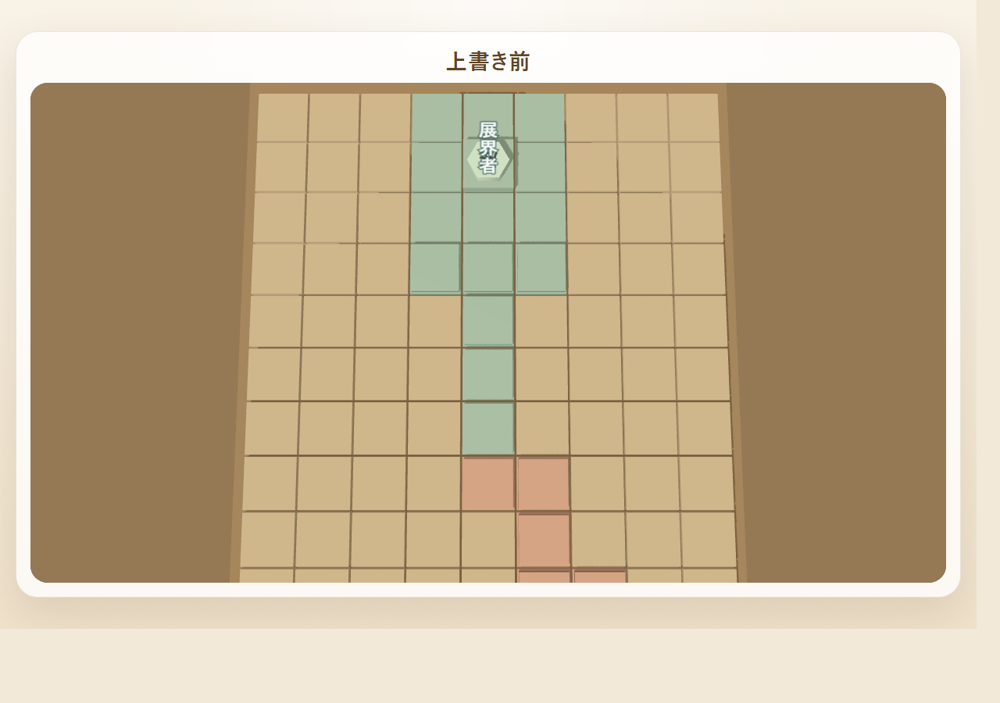
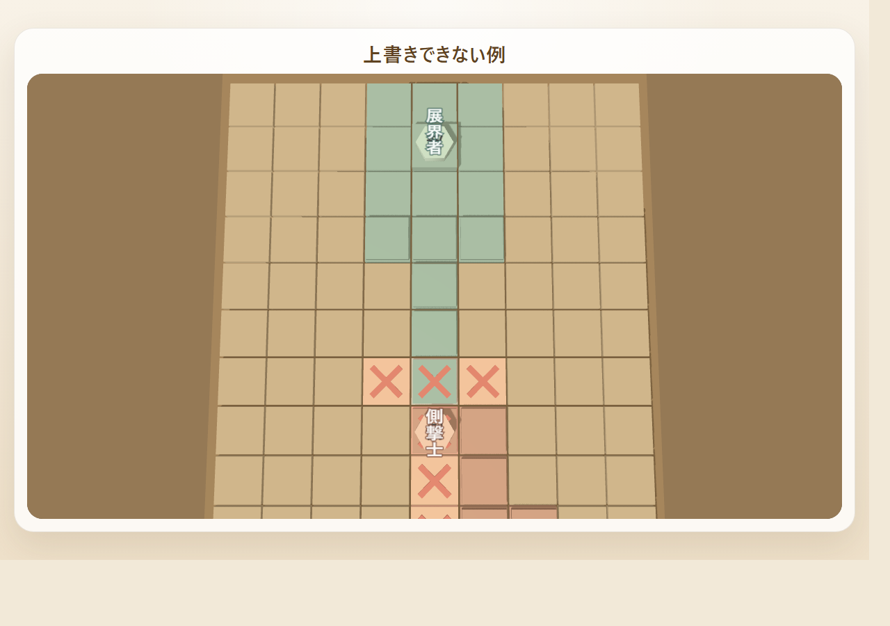
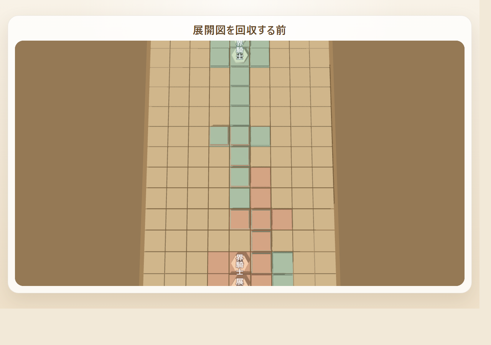
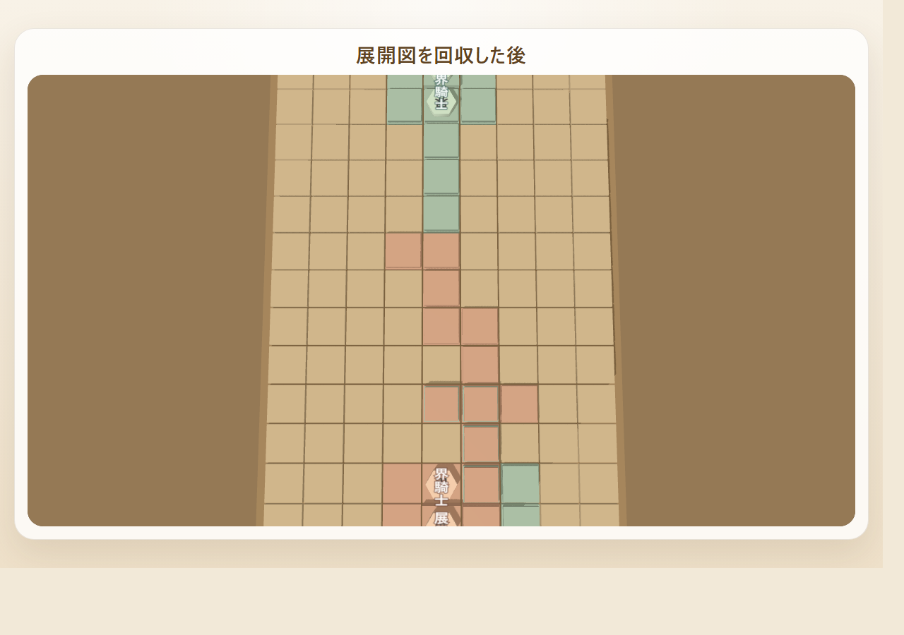

盤面

盤面は展開図を設置できる広さの制限でもあります。展開図も駒も、この盤面の中で使います。
Detailed Rules
このページは、UNFOLD を順番に理解するための詳細ルールです。 まず「このゲームで使うもの」と「勝利条件」を確認してから、 展開図を置く流れと補助行動へ進んでください。
第1章 このゲームで使うもの
盤面は展開図を設置できる広さの制限でもあります。展開図も駒も、この盤面の中で使います。

最初から各プレイヤーが持っている 3 マスのエリアです。自陣の起点になります。

手札から置いて、自分の陣地を広げるための形です。対応駒を1体置く起点にもなります。

展開図や本陣の上に置いて移動・攻撃・勝利条件の達成に使います。
第2章 勝利条件

自分の駒で相手の展界者、または将棋駒モード時の王将を取ると勝利です。

相手本陣中心のマスを、自分の展開図で上書きできたときも勝利です。
第3章 ゲーム開始時

本陣と初期配置の駒が置かれた状態から始まります。展界者または王将を中央に置き、その斜め前 2 マスに界騎士と護衛士、将棋駒モードでは銀将と金将をそれぞれ配置します。
第4章 1手でできること
1手では、次の 6 つの行動から 1 つだけ選びます。展開図を置いたときだけ、そのあとに対応駒を 1 体置いてから手番終了です。
第5章 展開図を置く

手札の展開図を 1 枚選びます。展開図は 0 度 / 90 度 / 180 度 / 270 度に回転して置けます。

置くときは、自分の陣地に一辺で接している必要があります。角だけ触れていても隣接ではありません。

自分の陣地と接していない場所には置けません。

自分の本陣の上には展開図を重ねられません。

角と角だけ触れていて、一辺も接していない場合は置けません。

置いたばかりの展開図の上に出る候補マスから 1 マス選び、対応駒を 1 体だけ置きます。

相手の展開図に重ねて置ける場合は、上書きして新しい自陣にできます。

まず、相手の展開図がどこにあるかを確認します。自分の陣地に接している必要があります。

上に駒がある展開図は上書きできません。
第6章 展開図以外の行動

駒は展開図や本陣の上だけを移動できます。相手の展開図の上にも移動でき、相手駒がいれば取って持ち駒にできます。

持ち駒は、本陣を含めたすべての自陣に打てます。相手の展開図の上には打てません。

手札をすべて山札へ戻してシャッフルし、新しく 3 枚引きます。

自分の陣地上にある自分の駒だけを回収できます。王は回収できず、相手展開図の上の駒も回収できません。

まず、盤面のどの展開図が回収候補になるかを確認します。

手札が 3 枚未満で、上に駒がなく、さらに上に別の展開図が重なっていない自分の展開図だけが回収できます。

選んだ展開図 1 枚を手札に戻します。相手に上書きされて下敷きになっている展開図は回収できません。
付録
ここから先は見返し用の参照資料です。対戦中に確認したくなったときだけ使ってください。
通常形の展開図と、対応駒の組み合わせです。